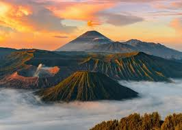
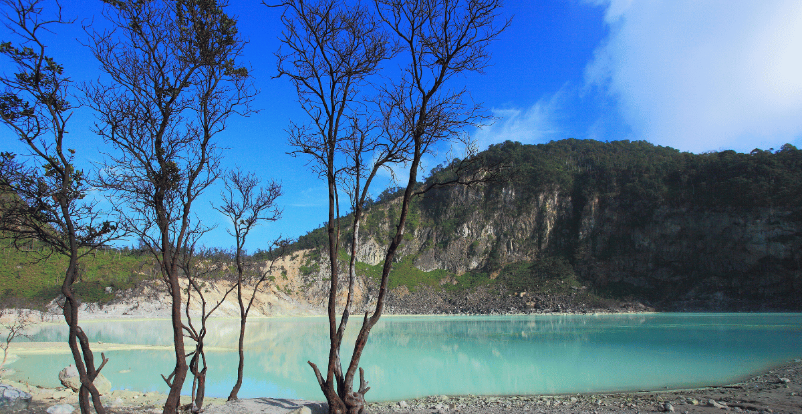

Sejarah

Sejarah Kota Bandung mencakup periode sebelum dan setelah menjadi pusat pemerintahan.
Awalnya, nama Bandung diperkirakan berasal dari kata "bendung" atau "banding" yang merujuk
pada bendungan atau danau. Pada masa lalu, aliran lava dari Gunung Tangkuban Perahu membentuk
danau purba di cekungan Bandung.
Secara resmi, Kota Bandung didirikan pada masa pemerintahan kolonial Belanda,
di bawah kepemimpinan Bupati Bandung ke-9, R.A. Wiranatakusumah (1794-1829).
Kabupaten Bandung sendiri, sebelum menjadi kota, merupakan bagian dari Kerajaan Mataram dan
mengikuti sistem pemerintahan kerajaan tersebut.
Perkembangan Penting dalam Sejarah Bandung:
Masa Prasejarah: Adanya danau purba di cekungan Bandung akibat letusan Gunung Tangkuban Perahu.
Masa Kerajaan Mataram: Kabupaten Bandung terbentuk dan mengikuti sistem pemerintahan Mataram.
Masa Kolonial Belanda: R.A. Wiranatakusumah II mendirikan Kota Bandung secara resmi.
Masa Kemerdekaan: Perkembangan kota yang pesat, terutama setelah Konferensi Asia-Afrika 1955, yang membawa Bandung ke panggung dunia.
Geografis

Bandung secara geografis terletak di dataran tinggi, tepatnya di kawasan Lembah Bandung, yang dikelilingi oleh pegunungan. Kota ini berada pada ketinggian sekitar 768 meter di atas permukaan laut, dengan titik tertinggi di sebelah utara (1050 mdpl) dan terendah di sebelah selatan (675 mdpl). Bandung juga dilewati oleh dua sungai utama, yaitu Cikapundung dan Citarum.
Secara lebih detail, berikut adalah beberapa poin penting mengenai geografis Bandung:
Letak: Bandung berada di tengah-tengah Provinsi Jawa Barat.
Bentuk wilayah: Bentuk wilayah Bandung menyerupai mangkuk raksasa karena dikelilingi oleh pegunungan.
Ketinggian: Ketinggian rata-rata Bandung adalah 768 meter di atas permukaan laut, dengan titik tertinggi di utara dan terendah di selatan.
Sungai: Dua sungai utama yang mengalir di Bandung adalah Cikapundung dan Citarum.
Batas wilayah: Bandung berbatasan dengan Kabupaten Bandung di timur, selatan, dan utara, Kabupaten Bandung Barat di utara, dan Kota Cimahi di barat.
Potensi banjir: Bandung selatan rentan terhadap banjir karena berada di daerah yang lebih rendah dan dilewati oleh sungai.
Wisata

Bandung menawarkan berbagai pilihan wisata, mulai dari wisata alam, sejarah, budaya, hingga kuliner. Beberapa tempat wisata populer di Bandung antara lain Kawah Putih, Taman Hutan Raya Ir. Djuanda, Lembang Park & Zoo, dan Orchid Forest Cikole. Selain itu, ada juga ikon kota seperti Gedung Sate, Monumen Bandung Lautan Api, dan Jembatan Pasupati. Bagi penggemar wisata sejarah, Gedung Merdeka dan Jalan Braga adalah pilihan yang tepat.
Berikut adalah beberapa rekomendasi tempat wisata di Bandung:
Wisata Alam:
Kawah Putih: Danau kawah vulkanik dengan pemandangan yang unik dan eksotis.
Taman Hutan Raya Ir. Djuanda: Hutan kota yang menawarkan berbagai aktivitas alam, seperti trekking dan menikmati udara segar.
Lembang Park & Zoo: Kebun binatang yang modern dengan berbagai koleksi hewan dan wahana permainan.
Orchid Forest Cikole: Hutan pinus yang dihiasi dengan berbagai jenis anggrek.
Ciwidey: Kawasan wisata yang terkenal dengan kebun teh, kawah, dan pemandian air panas.
Sanghyang Heuleut: Destinasi wisata alam yang menawarkan pemandangan tebing dan air yang indah.
Curug Tilu Leuwi Opat: Air terjun dengan beberapa kolam alami yang cocok untuk berenang dan bersantai.
Tebing Gunung Hawu: Tebing yang populer untuk panjat tebing dan menikmati pemandangan dari ketinggian.
Rainbow Garden Lembang: Taman bunga dengan berbagai warna-warni yang indah.
Wisata Sejarah dan Budaya:
Gedung Sate: Ikon Kota Bandung yang memiliki arsitektur unik dan bersejarah.
Monumen Bandung Lautan Api: Monumen yang memperingati peristiwa heroik Bandung Lautan Api.
Jembatan Pasupati: Jembatan layang yang menjadi simbol modernisasi Kota Bandung.
Gedung Merdeka: Tempat diselenggarakannya Konferensi Asia-Afrika pada tahun 1955.
Jalan Braga: Kawasan bersejarah dengan bangunan-bangunan tua, galeri seni, kafe, dan toko antik.
Masjid Raya Al Jabbar: Masjid yang megah dengan arsitektur modern dan desain yang unik.
Masjid Agung Bandung: Masjid bersejarah yang menjadi pusat kegiatan keagamaan di Bandung.
Museum Geologi: Museum yang menyimpan berbagai koleksi geologi dari seluruh Indonesia.
Wisata Kuliner:
Jalan Braga: Surganya kuliner khas Bandung, mulai dari makanan berat hingga camilan.
Pasar Baru Bandung: Tempat belanja oleh-oleh khas Bandung, termasuk makanan dan kerajinan tangan.
Kampung Dago Pojok: Kampung yang menawarkan suasana pedesaan dengan berbagai kuliner khas.
Chinatown Bandung: Kawasan yang kaya akan budaya Tionghoa, termasuk kuliner dan toko-toko tradisional.
Wisata Keluarga:
Lembang Park & Zoo: Kebun binatang yang cocok untuk wisata keluarga.
Taman Hutan Raya Ir. Djuanda: Tempat yang cocok untuk piknik dan beraktivitas di alam terbuka bersama keluarga.
Rainbow Garden Lembang: Taman bunga yang indah dan instagramable, cocok untuk foto bersama keluarga.
Taman Lansia: Taman yang nyaman untuk bersantai dan bermain bersama anak-anak.
Kiara Artha Park: Taman kota dengan berbagai fasilitas rekreasi, termasuk area bermain anak dan taman air.
Boscha
Observatorium Bosscha adalah pusat astronomi bersejarah di Indonesia,
menyajikan pengalaman edukatif dan ilmiah yang langka. Teleskop-teleskop
lawasnya masih digunakan, dan kunjungan baik siang maupun malam memberikan
wawasan unik tentang langit dan ilmu astronomi—tentu dengan pemesanan sebelumnya.
Lokasinya yang tinggi di Lembang membuatnya ideal, meskipun tantangan polusi cahaya
mulai muncul.
Gedung sate

Ya! Gedung Sate kini juga memiliki Museum Gedung Sate yang modern dan interaktif,
yang dibuka untuk umum. Kamu bisa belajar sejarah, menikmati teknologi augmented reality,
dan melihat miniatur kota Bandung